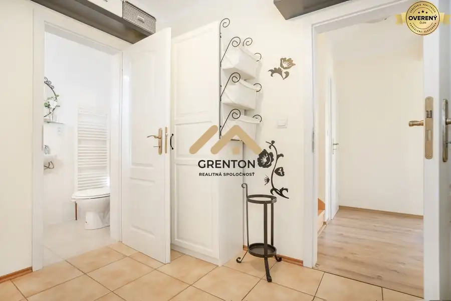
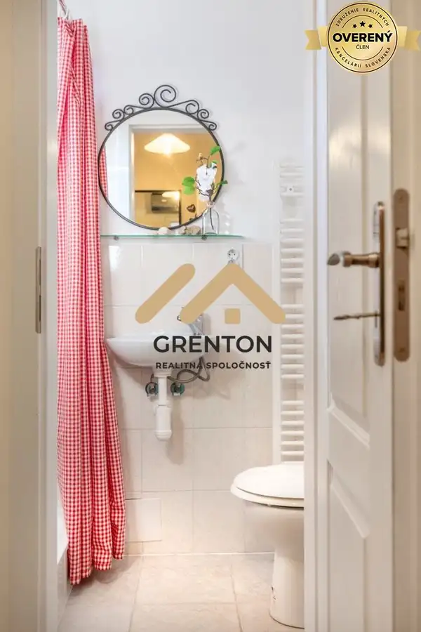
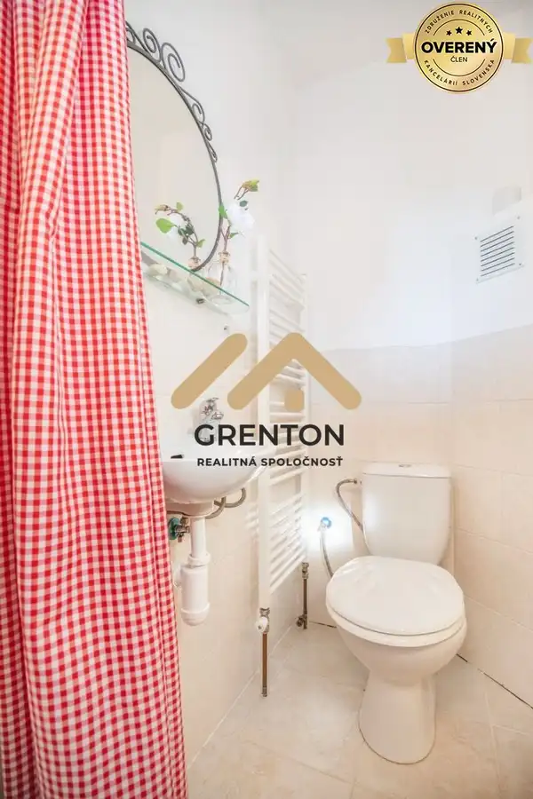
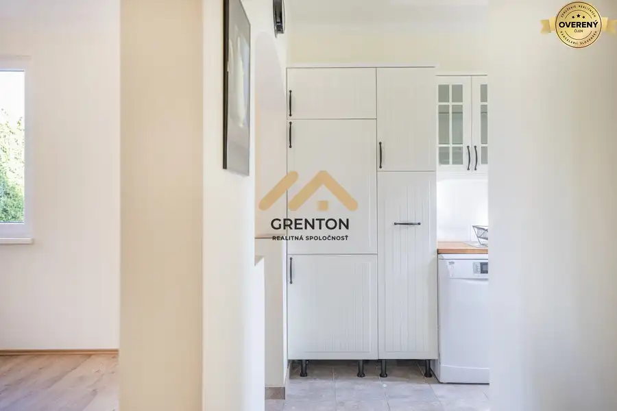
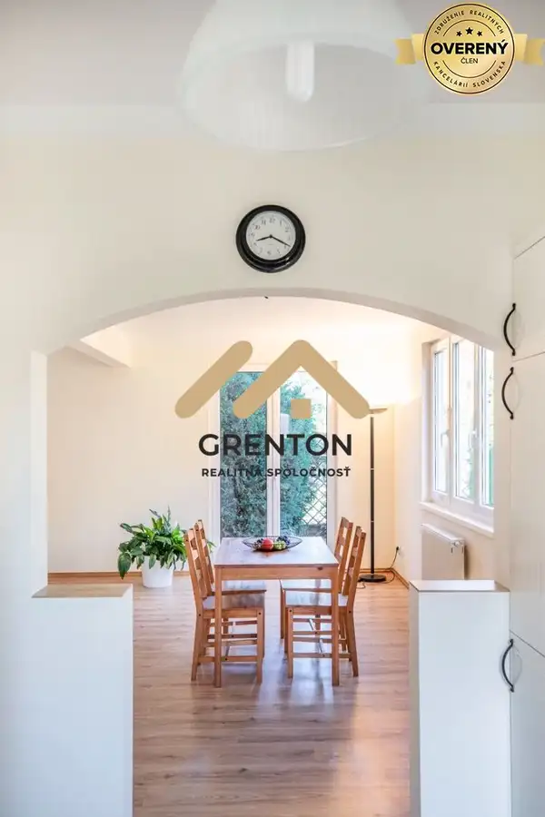
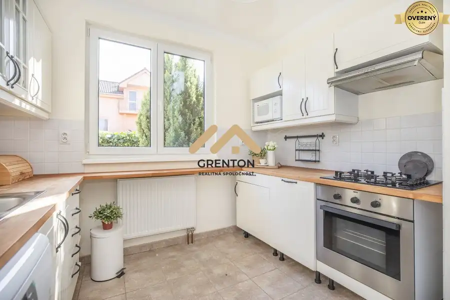
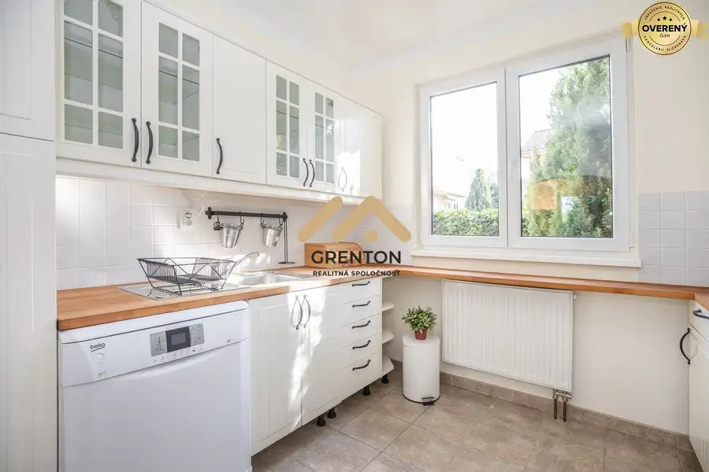

Predané: Rodinný dom v DNV na predaj
Devínska Nová Ves, Bratislava








- Dispozícia4-izbový
- Plocha100 m²
- Vlastníctvoosobné
O nehnuteľnosti
Predáme rodinný dom v peknej a tichej lokalite v Devínskej Novej Vsi s pekným výhľadom a útulnou záhradkou. Rodinný dom má 4 obytné izby, a malý ale útulný, rovinatý pozemok s celkovou výmerou 261 m2.
Rodinný montovaný dom je dvojpodlažný so sedlovou strechou, Dom je napojený na všetky inžinierske siete vrátane kanalizácie. Vstupná bránka a veľká brána sú kovové, oplotenie je murované.
Parkovanie: Na pozemku je možné parkovať 1 auto, vonku na chodníku ďalšie 1 alebo 2 autá. Popis domu a dispozícia: Prízemie je riešené ako denná, spoločenská a pracovná zóna s otvorenými priestormi. Kuchyňa a obývacia časť je priamo spojená s terasou, Vo vstupnej hale sa nachádza sprcovací kút a WC.
V podkrovnej časti domu sú umiestnené tri dostatočne veľké a funkčné obytné izby a kúpeľňa s wc. Vo dvoch izbách sú umiestnené vikiere, pričom sú umiestnené tak, aby čiastočné tvorili prístrešok nad vstupom a v západnej časti nad terasou. Vstup, kuchyňa a jedna izba v podkroví je orientovaná na ulicu, na východnú stranu.
Ostatná časť domu má okná umiestnené na západnej a čiastočne severnej časti pozemku. Dom sa nachádza v tichej lokalite s dobrou dostupnosťou, výhľadom, v časti zastavanej samostatne stojacimi rodinnými domami a množstvom zelene.
V blízkosti sa nachádza miestny úrad, potraviny, základná škola, materská škôlka.
Nenechajte si ujsť príležitosť bývať v dobrej lokalite Devínskej Novej Vsi a zavolajte mi pre dohodnutie obhliadky.
Tel.
Parametre
- Rozloha pozemku
- 261 m²
- Zastavaná plocha
- 75 m²
- Celková rozloha
- 150 m²
- Úžitková plocha
- 100 m²
- Počet poschodí
- 1
- Počet izieb
- 4
- Vlastníctvo
- osobné
- Status
- rezervované
- Odvoz odpadu
- áno
- Voda
- verejný vodovod
- El. napätie
- 230V
- Plyn
- áno
- Kanalizácia
- áno
- Internet
- optika
- Kúpeľňa
- vaňa
- Vykurovanie
- vlastné - plyn
- Terasa
- áno - 1
- Pivnica
- nie
- Garáž
- nie
- Parkovanie
- áno
- Inžinierske siete
- áno
- Postavené z
- Montované
- Zariadenie
- čiastočne
- Zateplený objekt
- áno
- Krb
- áno
- Klimatizácia
- nie
- Káblová televízia
- áno
- Okná
- plastové
- Terén
- rovina
- Prístupová cesta
- asfaltová cesta
- Dátum zverejnenia
- 2019-09-22
Kde to je
Mohlo by Vás zaujímať
 PozemokNové
88 800 €Lesné pozemky v katastri Bratislava - Dúbravka
Dúbravka, Bratislava
14800 m²
PozemokNové
88 800 €Lesné pozemky v katastri Bratislava - Dúbravka
Dúbravka, Bratislava
14800 m²
 ZáhradyNové
162 750 €Záhrada s možnosťou stavby na individuálnu rekreáciu, Lamač
Lamač, Bratislava
1550 m²
ZáhradyNové
162 750 €Záhrada s možnosťou stavby na individuálnu rekreáciu, Lamač
Lamač, Bratislava
1550 m²
 Rodinné domyNové
420 000 €Na predaj murovaný dom 135 m2 + pivnica 96 m2, pozemok 916 m2, Lozorno
Lozorno
4-izbový135 m²
Rodinné domyNové
420 000 €Na predaj murovaný dom 135 m2 + pivnica 96 m2, pozemok 916 m2, Lozorno
Lozorno
4-izbový135 m²